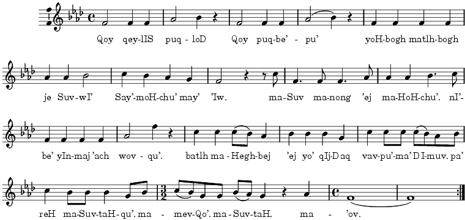

| webmaster@klingonska.org | http://klingonska.org/songs/anthem/ | Changed: 2007-07-15, 10:46 |

| Klingon Lyrics |
|---|
|
Qoy qeylIs puqloD.
|
| Hilary Bader's Lyrics |
|
Hear! Sons of Kahless.
|
| Literal Translation |
|
Hear, sons of Kahless!
|
Here are a few different recordings of SuvwI' van bom, The Warrior's Anthem (or The Klingon Anthem as it is sometimes called):
And last, but not least, a a plain text file with the lyrics.
| ©2002–2006, Copyright Zrajm C Akfohg, Klingonska Akademien, Uppsala. | ||